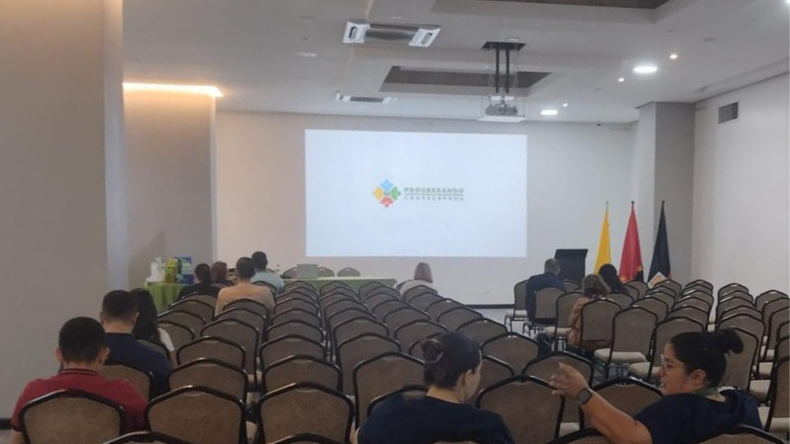

Conoce nuestra esencia
Más que una cooperativa, somos una familia comprometida con el progreso de nuestros asociados
Nacimos para transformar vidas
Nacimos en marzo de 2024 en Norte de Santander con un propósito claro: solucionar necesidades económicas. Fundada por profesionales comprometidos, hoy somos una cooperativa abierta a nuevos asociados que buscan mejorar su calidad de vida a través de la ayuda mutua.
Nuestra filosofía se basa en la solidaridad, la transparencia y el trabajo en equipo, valores que nos han permitido crecer y convertirnos en un aliado financiero confiable para más de 800 familias.
Conoce nuestra historia
Nuestra Razón de Ser
Dos pilares que guían nuestro camino hacia el progreso
Transformamos vidas a través de soluciones financieras
Ofrecer a nuestros asociados servicios, aportes y créditos que mejoren su calidad de vida, satisfaciendo sus necesidades y las de sus familias mediante soluciones de ahorro, crédito y bienestar.
Ser el aliado financiero más confiable de la región
Ser la cooperativa más reconocida en la región por nuestra transparencia, altos estándares de calidad y por ser el aliado financiero que brinda progreso a todos sus asociados.